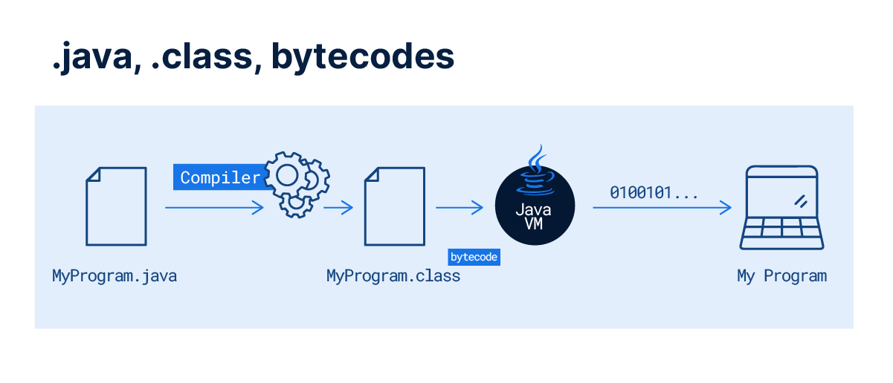

O que é Java?
O Java, como plataforma de programação, nasceu no ano de 1995 dentro dos laboratórios da empresa Sun Microsystem como resultado de uma extensa pesquisa científica e tecnológica. A plataforma Java entrega um ambiente completo para o desenvolvimento e execução de programas, sendo composta por:
Uma linguagem de programação de alto nível orientada a objetos;
Máquina Virtual (Java Virtual Machine ou JVM), que garante independência de plataforma, pois o código executa na máquina virtual e essa pode ser portada para outras plataformas como Windows ou Linux;
Java Runtime Environment ou JRE, que agrega a máquina virtual e alguns recursos para a execução de aplicações Java; e
Java Development Kit ou JDK, que é um conjunto de utilitários que oferece suporte ao desenvolvimento de aplicações.
No Java, os programas são escritos em um arquivo com a extensão .java, que em um processo posterior serão compilados para arquivos com a extensão .class. Esses, por sua vez, contêm os códigos a serem executados na máquina virtual, os bytecodes.
